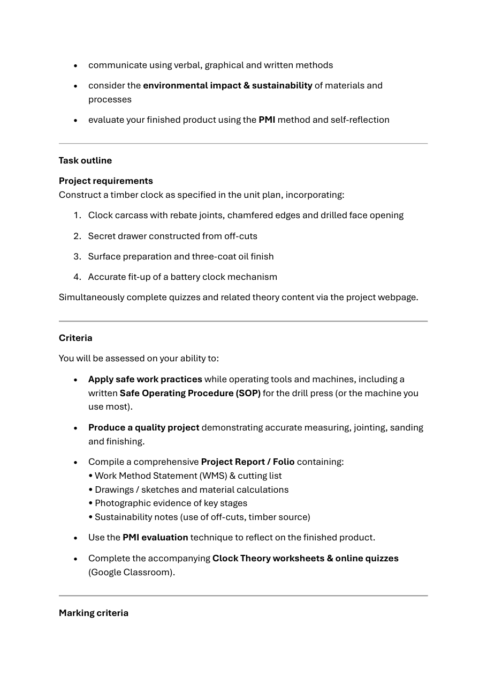

Your work
Student details
Your entries save automatically in this browser. Use Download evidence PDF before leaving the page.
Weeks 3-4
This module
Inspect the supplied timber, map the approved work sequence and prepare a drawing-based cutting list before practical manufacture.
Theory 1
Timber grain, structure and defects in Clock components

Timber is a natural material, so each piece has its own grain pattern, colour and features. Before a Clock component is marked out or shaped, the timber should be inspected carefully. This helps you decide whether the piece is suitable, how it should be positioned and whether a natural feature may affect strength, accuracy or the final appearance.
Grain direction describes the general direction in which the timber fibres run. Grain can often be seen as lines or patterns along the surface and edges of a board. Components usually behave more predictably when the grain runs along their length rather than across a narrow section. Grain direction can also affect how smoothly a surface can be prepared. If the fibres lift or tear, the surface may become uneven and show through the finish. Follow teacher direction when deciding how a component should be positioned or worked.
Heartwood is the older timber closer to the centre of the original tree. It is often darker, although colour alone is not always a reliable guide. Sapwood is the younger outer timber that once carried water and nutrients through the tree. It is often lighter. A board may contain both heartwood and sapwood. This colour variation may be useful as a visual feature, but it should be considered when matching visible Clock components.
Common natural features and defects include:
- Knots: areas where branches grew from the trunk. Small, sound knots may be acceptable, while loose or damaged knots can weaken a component or leave an uneven surface.
- Checks or splits: cracks caused by stresses or drying. These may spread further or interfere with accurate fitting.
- Warping: unwanted bending, twisting or cupping that prevents a component from sitting flat or aligning correctly.
- Resin or gum features: natural deposits or pockets that may affect surface preparation, appearance or finishing.
When inspecting school-supplied timber, first check the faces and edges, then look along the board for warping. Locate knots, cracks and resin or gum features, and consider where they would appear in the finished Clock. A natural feature does not automatically make the timber unusable. It may be placed where it does not reduce strength, interfere with a joint, affect the hidden drawer or spoil an important visible surface. The teacher must approve any decision about suitability.
Careful material selection also supports sustainability. Using suitable sections wisely, rather than rejecting timber only because it has natural colour or grain variation, can reduce waste while still producing accurate, durable and well-finished components.
Theory 2
Writing a Work Method Statement for the Clock

A Work Method Statement, or WMS, is a planned sequence showing how the Clock project will be completed safely, accurately and efficiently. It is more than a general list of workshop rules. Each step should identify the work being completed, the likely hazards, the controls required and the evidence that will show the step was completed correctly. The exact order must match the teacher-approved project plan, the working drawing and the relevant school safe operating procedures.
The WMS should begin with planning. This includes reading the Clock drawing, confirming written dimensions, preparing the cutting list and checking that the required materials are available. Later stages may include carcass and rebate work, forming the chamfered edges, preparing the drilled face opening, constructing the hidden drawer from suitable off-cuts, surface preparation, applying the three-coat oil finish, fitting the battery mechanism, collecting photographs and completing the PMI evaluation. These stages should not simply be copied into a list. Each one needs enough detail to show what must be checked before moving on.
A useful Clock WMS can organise each stage under four headings:
- Work stage: Name the specific part of the project, such as checking the drawing, preparing a rebate, testing the hidden drawer fit or completing surface preparation.
- Hazards: Identify hazards connected to that stage, including sharp edges, dust, unsecured work, moving equipment, liquids or incorrect handling. Use only hazards that genuinely apply.
- Controls: Record the required controls, such as teacher supervision, correct PPE, secure workholding and following the approved school SOP. Machine settings and practical procedures must come from the teacher and the relevant SOP.
- Evidence checkpoint: State what will prove the stage is ready to continue. This could include dimensions checked against the drawing, rebates inspected before assembly, chamfers compared for consistency, drawer movement tested, surfaces approved before finishing, or a photograph taken for the folio.
Evidence checkpoints prevent mistakes from being carried into later stages. For example, checking the carcass before fitting the drawer is more efficient than trying to correct alignment after finishing. The WMS should also show where teacher approval is required before material is removed, machinery is used, the finish is applied or the mechanism is installed.
Theory 3
Cutting lists, material calculations and cost planning

A cutting list turns the Clock working drawing into an organised record of the timber components required for the project. It identifies each component, its approved dimensions, the required quantity and any notes needed to distinguish it from similar parts. This helps you prepare material systematically instead of relying on memory or guessing. Because the supplied drawing uses millimetres and states DO NOT SCALE DRAWING, all cutting-list dimensions must come from written dimensions, teacher-approved sketches or other approved project documents.
Before completing the cutting list, trace each component across the relevant drawing views. Check that the length, width and thickness belong to the same part, then confirm the required quantity. Do not assume that two parts are identical simply because they look similar in one view. The hidden drawer must also be included, even though suitable off-cuts are used for its components. Record the approved dimensions and quantities first, then select off-cuts that are sound, stable and large enough.
A useful planning process is:
- List each Clock and drawer component using a clear name or label.
- Enter its approved length, width and thickness in millimetres.
- Record the required quantity and calculate the total material needed.
- Plan how components could be arranged within the available stock or suitable off-cuts.
- Allow only for material requirements shown in approved documents or directed by the teacher.
- Check the completed list against the drawing before material preparation begins.
Material calculations help reduce waste by showing how much timber is genuinely required. Depending on the school’s approved method, calculations may use total component lengths, areas or volumes. The method and units must remain consistent. An estimate should be based on verified quantities, not on the apparent size of the drawing.
Cost planning uses the calculated material quantity and the current verified price. A simple estimate may be recorded as: required quantity × current price = estimated cost. Do not invent a unit price or assume that an old price is still correct. Record where the price came from and the date it was checked.
During construction, compare planned use with actual use. Note any extra material required, suitable off-cuts reused, damaged pieces replaced or waste avoided. Honest records show how planning affected cost, efficiency and sustainability.
Guided practice
Weeks 3-4 knowledge checks
Choose an answer, check it and use the progressive hints and feedback to improve.
Apply your learning
Scaffolded written responses
Write first, use the feedback prompts, then compare your reasoning with the model response.
Finish the two-week block
Save your evidence
Your work saves in this browser, but browser storage is not the official submission. Download the module evidence PDF before changing devices or clearing browser data.
No marks, answers or personal information are sent from this webpage.